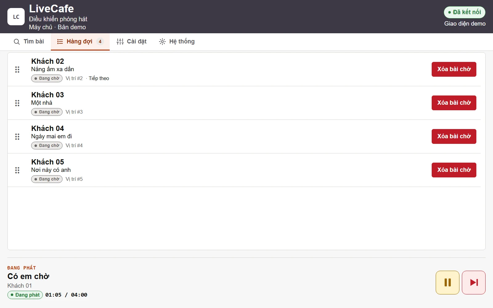
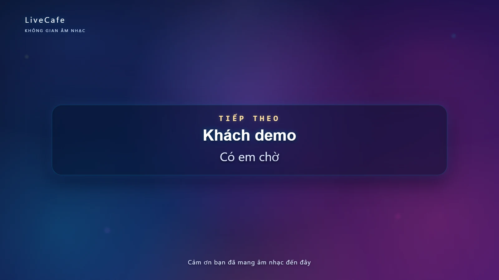
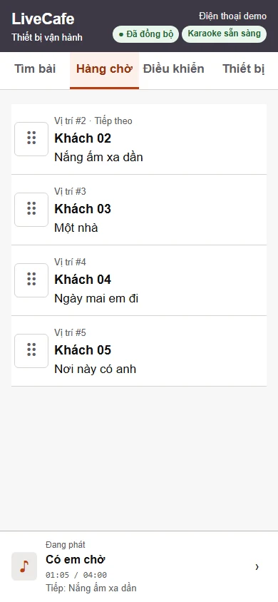
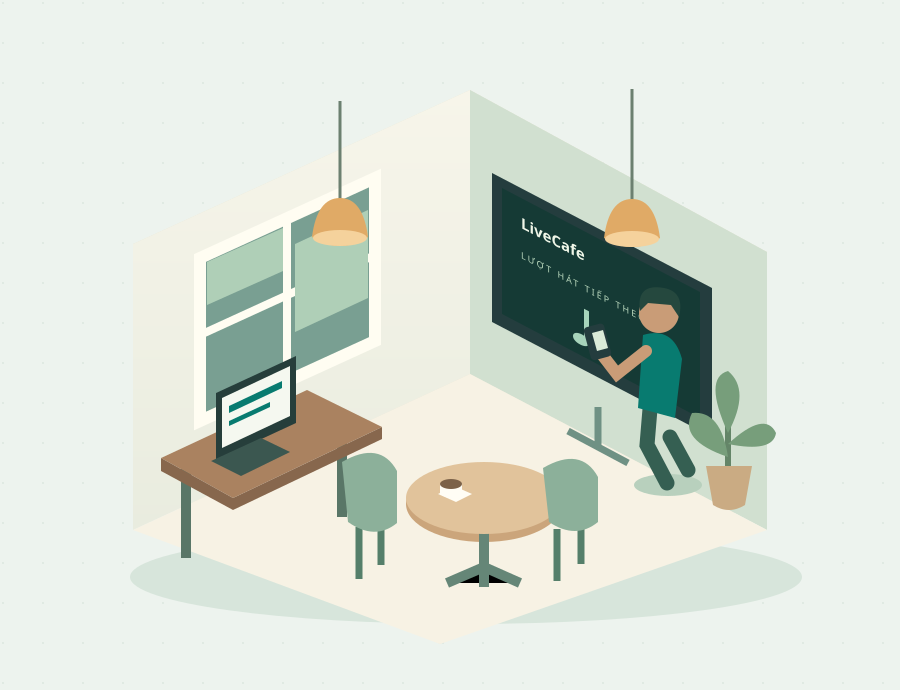

01 / MÁY TÍNH
Bàn điều phối trung tâm
Tìm bài, quản lý người hát, sắp xếp hàng chờ và điều khiển phát trên máy Windows.
DÀNH CHO KHÔNG GIAN CÓ ÂM NHẠC
Từ yêu cầu đầu tiên đến lượt hát tiếp theo. Nhận bài, sắp xếp hàng chờ và giữ nhịp buổi hát trên một hệ thống.
Máy tính quản lý · Điện thoại vận hành · TV trình chiếu



Tập hợp yêu cầu về cùng một hàng chờ.
Biết ai đang hát, ai sẽ tiếp theo.
Để người hát và khán giả cùng theo dõi.
PHỐI HỢP TRONG CÙNG KHÔNG GIAN
Người vận hành có công cụ riêng.
Người hát có sân khấu của mình.

01 / MÁY TÍNH
Tìm bài, quản lý người hát, sắp xếp hàng chờ và điều khiển phát trên máy Windows.
02 / ĐIỆN THOẠI
Nhân viên dùng điện thoại đã ghép nối để tìm bài, theo dõi hàng chờ và điều khiển trong mạng nội bộ.
03 / TV
Hiển thị video, lời mời lượt tiếp theo và hiệu ứng chúc mừng. Kết nối từ máy tính qua HDMI.
TỪ YÊU CẦU ĐẾN TRÌNH CHIẾU
Tập trung vào những thao tác
người vận hành dùng hằng ngày.
Nhập tên bài, ca sĩ hoặc nhấn giữ để nói tiếng Việt. Xem kết quả và chọn video phù hợp.
CHỮ & GIỌNG NÓIThêm bài cho người hát, theo dõi thứ tự và kéo để sắp xếp lại khi cần.
NGƯỜI HÁT & THỨ TỰTạm dừng, tiếp tục hoặc bỏ qua. Thay video khi bài được chọn cần xử lý.
ĐIỀU KHIỂN TẬP TRUNGMời người hát bằng tiếng Việt, kết hợp hiển thị trên TV và đếm ngược chuyển bài.
CHUYỂN LƯỢT RÕ RÀNGĐiểm vui và hiệu ứng chúc mừng giúp tạo không khí. Điểm số mang tính giải trí, không phân tích giọng hát.
TRÌNH CHIẾU & CẢM XÚCMột buổi demo để hình dung các thao tác trong không gian của anh chị.
Trao đổi về buổi demoMỘT QUY TRÌNH DỄ THEO DÕI
Khách gửi yêu cầu trực tiếp cho người vận hành.
Tìm bài, xem kết quả và chọn phiên bản phù hợp.
Chọn hoặc tạo người hát rồi thêm bài vào danh sách.
Theo dõi buổi hát và chủ động điều phối bài tiếp theo.
NHÌN GẦN HƠN
Chọn ảnh để xem phóng lớn.
Tất cả hình ảnh dùng dữ liệu demo.
TRƯỚC KHI BẮT ĐẦU
Chưa thấy câu trả lời?
Trao đổi trực tiếp với LiveCafe ↗
Một máy tính Windows, TV hoặc màn hình kết nối HDMI và hệ thống âm thanh phù hợp với quán. Điện thoại là công cụ bổ sung cho nhân viên vận hành. Khi trao đổi demo, anh chị có thể gửi thông tin thiết bị đang có để cùng kiểm tra cách bố trí.
Cần Internet để tìm và phát video trực tuyến. Điện thoại vận hành kết nối mạng nội bộ với máy tính Host. Chất lượng phát còn phụ thuộc đường truyền và nguồn video.
Người vận hành ghép nối điện thoại từ máy Host, sau đó dùng giao diện trên trình duyệt để tìm bài, quản lý hàng chờ và điều khiển. Tìm bằng giọng nói trên điện thoại cần kết nối HTTPS tin cậy và quyền sử dụng micro.
Phiên bản hiện tại dành quyền chọn và thêm bài cho người vận hành. Khách gửi yêu cầu trực tiếp cho nhân viên. Mã QR được dùng để ghép nối thiết bị vận hành, không phải để khách tự đặt bài.
Không. Điểm số và hiệu ứng chúc mừng chỉ mang tính giải trí, giúp tạo không khí cho buổi hát. LiveCafe không dùng điểm này để phân tích hay đánh giá giọng hát.
Công việc kết nối Facebook đang tạm dừng. Livestream Công khai chưa được giới thiệu là khả năng đã hoàn thiện; nội dung demo hiện tập trung vào trải nghiệm karaoke và điều phối tại quán.
Gửi email đến hongphipy95@gmail.com với tiêu đề “LiveCafe — Liên hệ xem demo”. Anh chị có thể mô tả ngắn không gian, thiết bị hiện có và nội dung muốn xem.
CÙNG HÌNH DUNG BUỔI HÁT TẠI QUÁN
Trao đổi nhu cầu và xem cách các màn hình phối hợp
trong một buổi demo.